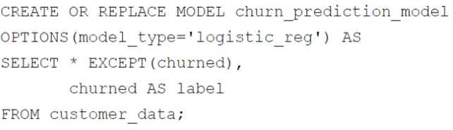
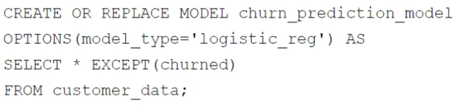
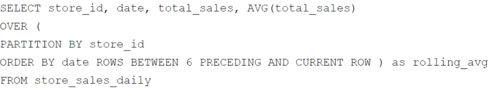
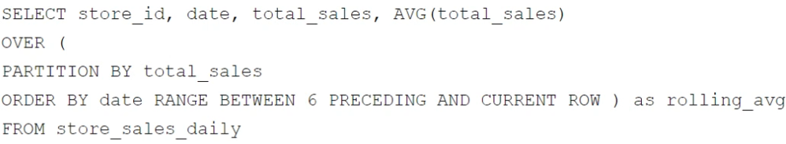

Your retail company wants to predict customer churn using historical purchase data stored in BigQuery. The dataset includes customer demographics, purchase history, and a label indicating whether the customer churned or not. You want to build a machine learning model to identify customers at risk of churning. You need to create and train a logistic regression model for predicting customer churn, using the customer_data table with the churned column as the target label. Which BigQuery ML query should you use?
A. [Imagen: sin descripción]
-------------------------
Opción A · Imagen original · revisión visual pendienteTranscripción OCR sin verificar
CREATE OR REPLACE MODEL churn_prediction_model
OPTIONS (model_type='logistic_reg') AS
SELECT *
FROM customer data;
B. [Imagen: sin descripción]
-------------------------

Opción B · Imagen original · revisión visual pendienteTranscripción OCR sin verificar
CREATE OR REPLACE MODEL churn_prediction_model
OPTIONS (model_type='logistic_reg') AS
SELECT * EXCEPT (churned),
churned AS label
FROM customer_data;
C. [Imagen: sin descripción]
-------------------------

Opción C · Imagen original · revisión visual pendienteTranscripción OCR sin verificar
CREATE OR REPLACE MODEL churn_prediction_model
OPTIONS (model_type='logistic_reg') AS
SELECT * EXCEPT (churned)
FROM customer_data;
D. [Imagen: sin descripción]
-------------------------
Opción D · Imagen original · revisión visual pendienteTranscripción OCR sin verificar
CREATE OR REPLACE MODEL churn_prediction_model
OPTIONS (model_type='logistic_reg') AS
SELECT churned as label
FROM customer_data;
Ver respuesta y explicación de la fuente
B
BigQuery ML requires the query to select all feature columns and explicitly define the target variable using the 'AS label' alias. Option B correctly uses SELECT * EXCEPT(churned) to include only predictor variables and aliases the churned column as label, satisfying both requirements.
Option A fails because it includes the target in the features without aliasing it as label. Option C fails because it excludes the target entirely, preventing supervised learning. Option D fails because it omits all feature columns needed for prediction.
Your company has several retail locations. Your company tracks the total number of sales made at each location each day. You want to use SQL to calculate the weekly moving average of sales by location to identify trends for each store. Which query should you use?
A. [Imagen: sin descripción]
-------------------------
Opción A · Imagen original · revisión visual pendienteTranscripción OCR sin verificar
SELECT store_id, date, total_sales, AVG(total_sales) OVER (
PARTITION BY store_id
ORDER BY total_sales RANGE BETWEEN 6 PRECEDING AND CURRENT ROW ) as rolling_avg
FROM store sales daily
B. [Imagen: sin descripción]
-------------------------
Opción B · Imagen original · revisión visual pendienteTranscripción OCR sin verificar
SELECT store id, date, total_sales, AVG(total_sales)
OVER (
PARTITION BY date ORDER BY store_id ROWS BETWEEN 6 PRECEDING AND CURRENT ROW ) as rolling avg
FROM store sales daily
C. [Imagen: sin descripción]
-------------------------

Opción C · Imagen original · revisión visual pendienteTranscripción OCR sin verificar
SELECT store_id, date, total_sales, AVG(total_sales)
OVER (
PARTITION BY store_id
ORDER BY date ROWS BETWEEN 6 PRECEDING AND CURRENT ROW ) as rolling_avg
FROM store sales daily
D. [Imagen: sin descripción]
-------------------------

Opción D · Imagen original · revisión visual pendienteTranscripción OCR sin verificar
SELECT store id, date, total_sales, AVG(total_sales)
OVER (
PARTITION BY total sales
ORDER BY date RANGE BETWEEN 6 PRECEDING AND CURRENT ROW ) as rolling_avg
FROM store sales daily
Ver respuesta y explicación de la fuente
C
Option C is correct because it uses PARTITION BY store_id to isolate calculations per location and ORDER BY date to establish the chronological sequence for the moving average. The window clause ROWS BETWEEN 6 PRECEDING AND CURRENT ROW correctly defines a 7-day period (including the current day) for calculating the weekly trend.
Option A is incorrect because ordering by total_sales rather than date results in an illogical calculation based on sales magnitude rather than time. Option B partitions by date, which aggregates across all stores instead of isolating trends per location.
Your company is building a near real-time streaming pipeline to process JSON telemetry data from small appliances. You need to process messages arriving at a Pub/Sub topic, capitalize letters in the serial number field, and write results to BigQuery. You want to use a managed service and write a minimal amount of code for underlying transformations. What should you do?
A. Use a Pub/Sub to BigQuery subscription, write results directly to BigQuery, and schedule a transformation query to run every five minutes.
B. Use a Pub/Sub to Cloud Storage subscription, write a Cloud Run service that is triggered when objects arrive in the bucket, performs the transformations, and writes the results to BigQuery.
C. Use the “Pub/Sub to BigQuery” Dataflow template with a UDF, and write the results to BigQuery.
D. Use a Pub/Sub push subscription, write a Cloud Run service that accepts the messages, performs the transformations, and writes the results to BigQuery.
Ver respuesta y explicación de la fuente
C
Option C is the best choice because Dataflow is a fully managed service designed specifically for streaming data pipelines, and using its built-in Pub/Sub to BigQuery template with a User-Defined Function (UDF) allows for real-time transformation with minimal custom code. Option A is incorrect because scheduled queries introduce latency that violates the 'near real-time' requirement, while Options B and D involve managing Cloud Run services which requires significantly more boilerplate code for connection handling and error management compared to a simple Dataflow UDF.
You want to process and load a daily sales CSV file stored in Cloud Storage into BigQuery for downstream reporting. You need to quickly build a scalable data pipeline that transforms the data while providing insights into data quality issues. What should you do?
A. Create a batch pipeline in Cloud Data Fusion by using a Cloud Storage source and a BigQuery sink.
B. Load the CSV file as a table in BigQuery, and use scheduled queries to run SQL transformation scripts.
C. Load the CSV file as a table in BigQuery. Create a batch pipeline in Cloud Data Fusion by using a BigQuery source and sink.
D. Create a batch pipeline in Dataflow by using the Cloud Storage CSV file to BigQuery batch template.
Ver respuesta y explicación de la fuente
A
Cloud Data Fusion is a low-code/no-code service that allows for the rapid visual construction of scalable data pipelines. It natively provides features for handling transformations and offers built-in data quality monitoring and lineage tracking, directly addressing the requirement for insights into data quality issues.
You manage a Cloud Storage bucket that stores temporary files created during data processing. These temporary files are only needed for seven days, after which they are no longer needed. To reduce storage costs and keep your bucket organized, you want to automatically delete these files once they are older than seven days. What should you do?
A. Set up a Cloud Scheduler job that invokes a weekly Cloud Run function to delete files older than seven days.
B. Configure a Cloud Storage lifecycle rule that automatically deletes objects older than seven days.
C. Develop a batch process using Dataflow that runs weekly and deletes files based on their age.
D. Create a Cloud Run function that runs daily and deletes files older than seven days.
Ver respuesta y explicación de la fuente
B
Option B is the correct choice because Cloud Storage lifecycle management is a native, serverless feature designed specifically to automate object deletion based on age or other criteria without incurring additional compute costs. Options A, C, and D rely on external services like Cloud Run, Dataflow, or Cloud Scheduler, which introduce unnecessary complexity, higher operational overhead, and additional expenses for simple retention tasks.
You work for a healthcare company that has a large on-premises data system containing patient records with personally identifiable information (PII) such as names, addresses, and medical diagnoses. You need a standardized managed solution that de-identifies PII across all your data feeds prior to ingestion to Google Cloud. What should you do?
A. Use Cloud Run functions to create a serverless data cleaning pipeline. Store the cleaned data in BigQuery.
B. Use Cloud Data Fusion to transform the data. Store the cleaned data in BigQuery.
C. Load the data into BigQuery, and inspect the data by using SQL queries. Use Dataflow to transform the data and remove any errors.
D. Use Apache Beam to read the data and perform the necessary cleaning and transformation operations. Store the cleaned data in BigQuery.
Ver respuesta y explicación de la fuente
B
Option B is correct because Cloud Data Fusion is a fully managed, visual data integration service that provides standardized connectors and templates for building ETL pipelines, including de-identification workflows using the Data Loss Prevention (DLP) API.
The question specifically asks for a 'standardized managed solution,' which fits Data Fusion's low-code nature better than Apache Beam (Option D), which is an open-source framework rather than a fully managed product itself.
Option A is incorrect because Cloud Run is designed for stateless HTTP services, not complex batch data transformation pipelines.
Option C is incorrect because it proposes loading PII into BigQuery first, which violates the explicit requirement to de-identify data *prior* to ingestion.
You manage a large amount of data in Cloud Storage, including raw data, processed data, and backups. Your organization is subject to strict compliance regulations that mandate data immutability for specific data types. You want to use an efficient process to reduce storage costs while ensuring that your storage strategy meets retention requirements. What should you do?
A. Configure lifecycle management rules to transition objects to appropriate storage classes based on access patterns. Set up Object Versioning for all objects to meet immutability requirements.
B. Move objects to different storage classes based on their age and access patterns. Use Cloud Key Management Service (Cloud KMS) to encrypt specific objects with customer-managed encryption keys (CMEK) to meet immutability requirements.
C. Create a Cloud Run function to periodically check object metadata, and move objects to the appropriate storage class based on age and access patterns. Use object holds to enforce immutability for specific objects.
D. Use object holds to enforce immutability for specific objects, and configure lifecycle management rules to transition objects to appropriate storage classes based on age and access patterns.
Ver respuesta y explicación de la fuente
D
Option D is correct because Object Holds are specifically designed to enforce strict immutability and compliance retention policies, preventing any modification or deletion while held. Concurrently, Lifecycle Management rules provide an automated, efficient mechanism to transition data between storage classes based on age or frequency, optimizing costs without manual intervention.
The most tempting alternative, Option A, is incorrect because Object Versioning creates multiple versions of objects for recovery purposes rather than enforcing true immutability; older versions can still be overwritten or deleted unless explicitly protected by holds.
You work for an ecommerce company that has a BigQuery dataset that contains customer purchase history, demographics, and website interactions. You need to build a machine learning (ML) model to predict which customers are most likely to make a purchase in the next month. You have limited engineering resources and need to minimize the ML expertise required for the solution. What should you do?
A. Use BigQuery ML to create a logistic regression model for purchase prediction.
B. Use Vertex AI Workbench to develop a custom model for purchase prediction.
C. Use Colab Enterprise to develop a custom model for purchase prediction.
D. Export the data to Cloud Storage, and use AutoML Tables to build a classification model for purchase prediction.
Ver respuesta y explicación de la fuente
A
BigQuery ML allows you to train and evaluate machine learning models using standard SQL without leaving the BigQuery environment, directly addressing the constraint of limited engineering resources and minimizing required ML expertise.
While Vertex AI or AutoML might offer more advanced capabilities, they require exporting data (D) or setting up separate development environments (B, C), which increases complexity and resource usage.
You are designing a pipeline to process data files that arrive in Cloud Storage by 3:00 am each day. Data processing is performed in stages, where the output of one stage becomes the input of the next. Each stage takes a long time to run. Occasionally a stage fails, and you have to address the problem. You need to ensure that the final output is generated as quickly as possible. What should you do?
A. Design a Spark program that runs under Dataproc. Code the program to wait for user input when an error is detected. Rerun the last action after correcting any stage output data errors.
B. Design the pipeline as a set of PTransforms in Dataflow. Restart the pipeline after correcting any stage output data errors.
C. Design the workflow as a Cloud Workflow instance. Code the workflow to jump to a given stage based on an input parameter. Rerun the workflow after correcting any stage output data errors.
D. Design the processing as a directed acyclic graph (DAG) in Cloud Composer. Clear the state of the failed task after correcting any stage output data errors.
Ver respuesta y explicación de la fuente
D
Cloud Composer (Airflow) is the ideal orchestration tool for complex, multi-stage data pipelines where dependency management and fault tolerance are critical. By using a DAG, you can isolate failures to specific tasks; clearing the state of a failed task allows you to rerun only that stage after fixing the error, minimizing downtime compared to restarting entire jobs or workflows.
Another team in your organization is requesting access to a BigQuery dataset. You need to share the dataset with the team while minimizing the risk of unauthorized copying of data. You also want to create a reusable framework in case you need to share this data with other teams in the future. What should you do?
A. Create authorized views in the team’s Google Cloud project that is only accessible by the team.
B. Create a private exchange using Analytics Hub with data egress restriction, and grant access to the team members.
C. Enable domain restricted sharing on the project. Grant the team members the BigQuery Data Viewer IAM role on the dataset.
D. Export the dataset to a Cloud Storage bucket in the team’s Google Cloud project that is only accessible by the team.
Ver respuesta y explicación de la fuente
B
Option B is correct because BigQuery Analytics Hub provides a centralized, reusable framework for sharing data assets across organizations or internal teams.
Crucially, it offers 'data egress restrictions' that explicitly prevent consumers from copying the underlying data, satisfying the security requirement better than authorized views where results can still be extracted via queries.
Your company has developed a website that allows users to upload and share video files. These files are most frequently accessed and shared when they are initially uploaded. Over time, the files are accessed and shared less frequently, although some old video files may remain very popular.
You need to design a storage system that is simple and cost-effective. What should you do?
A. Create a single-region bucket with Autoclass enabled.
B. Create a single-region bucket. Configure a Cloud Scheduler job that runs every 24 hours and changes the storage class based on upload date.
C. Create a single-region bucket with custom Object Lifecycle Management policies based on upload date.
D. Create a single-region bucket with Archive as the default storage class.
Ver respuesta y explicación de la fuente
A
Option A is correct because Autoclass automatically transitions objects between Standard and Nearline storage classes based on actual access patterns over a 90-day period, satisfying the requirement for simplicity and cost-effectiveness without manual intervention. This dynamic adjustment handles both frequently accessed new files and infrequently accessed older files efficiently. Option C is incorrect because Lifecycle Management policies rely on static time-based rules (e.g., age of object), which cannot adapt to the specific behavior where some old files remain popular while others become inactive.
You recently inherited a task for managing Dataflow streaming pipelines in your organization and noticed that proper access had not been provisioned to you. You need to request a Google-provided IAM role so you can restart the pipelines. You need to follow the principle of least privilege. What should you do?
A. Request the Dataflow Developer role.
B. Request the Dataflow Viewer role.
C. Request the Dataflow Worker role.
D. Request the Dataflow Admin role.
Ver respuesta y explicación de la fuente
A
The Dataflow Developer role (A) grants the necessary permissions to create, update, and restart pipelines while adhering to the principle of least privilege.
Option B is incorrect because the Viewer role only allows read-only access, preventing any pipeline modifications.
Option D is overly permissive as it includes administrative privileges not required for simply restarting a pipeline, thus violating least privilege guidelines.
You need to create a new data pipeline. You want a serverless solution that meets the following requirements:
• Data is streamed from Pub/Sub and is processed in real-time.
• Data is transformed before being stored.
• Data is stored in a location that will allow it to be analyzed with SQL using Looker.
[Imagen: sin descripción]
Which Google Cloud services should you recommend for the pipeline?
Enunciado · Imagen original · revisión visual pendiente
A. 1. Dataproc Serverless
2. Bigtable
B. 1. Cloud Composer
2. Cloud SQL for MySQL
C. 1. BigQuery
2. Analytics Hub
D. 1. Dataflow
2. BigQuery
Ver respuesta y explicación de la fuente
D
Dataflow is the correct serverless service for real-time stream processing from Pub/Sub, while BigQuery serves as the storage destination optimized for SQL analysis via Looker.
Option A is incorrect because Dataproc Serverless is designed for batch workloads rather than continuous streaming, and Bigtable is a NoSQL database not directly suited for standard SQL analysis with Looker.
Your team wants to create a monthly report to analyze inventory data that is updated daily. You need to aggregate the inventory counts by using only the most recent month of data, and save the results to be used in a Looker Studio dashboard. What should you do?
A. Create a materialized view in BigQuery that uses the SUM( ) function and the DATE_SUB( ) function.
B. Create a saved query in the BigQuery console that uses the SUM( ) function and the DATE_SUB( ) function. Re-run the saved query every month, and save the results to a BigQuery table.
C. Create a BigQuery table that uses the SUM( ) function and the _PARTITIONDATE filter.
D. Create a BigQuery table that uses the SUM( ) function and the DATE_DIFF( ) function.
Ver respuesta y explicación de la fuente
A
Materialized views in BigQuery automatically refresh and store pre-computed results, making them the most efficient way to serve aggregated data to Looker Studio without manual intervention. The DATE_SUB() function correctly filters for the most recent month's data within the view definition, ensuring the dashboard reflects up-to-date inventory counts.
You have a BigQuery dataset containing sales data. This data is actively queried for the first 6 months. After that, the data is not queried but needs to be retained for 3 years for compliance reasons. You need to implement a data management strategy that meets access and compliance requirements, while keeping cost and administrative overhead to a minimum. What should you do?
A. Use BigQuery long-term storage for the entire dataset. Set up a Cloud Run function to delete the data from BigQuery after 3 years.
B. Partition a BigQuery table by month. After 6 months, export the data to Coldline storage. Implement a lifecycle policy to delete the data from Cloud Storage after 3 years.
C. Set up a scheduled query to export the data to Cloud Storage after 6 months. Write a stored procedure to delete the data from BigQuery after 3 years.
D. Store all data in a single BigQuery table without partitioning or lifecycle policies.
Ver respuesta y explicación de la fuente
B
Option B is correct because it optimizes costs by moving infrequently accessed data to the cheaper Coldline storage class after 6 months, while using a lifecycle policy for automated, low-overhead deletion at the 3-year mark. It minimizes BigQuery query costs during the active period through partitioning. Option C is incorrect because manually writing stored procedures and scheduled queries creates higher administrative overhead compared to native lifecycle policies.
You have created a LookML model and dashboard that shows daily sales metrics for five regional managers to use. You want to ensure that the regional managers can only see sales metrics specific to their region. You need an easy-to-implement solution. What should you do?
A. Create a sales_region user attribute, and assign each manager’s region as the value of their user attribute. Add an access_filter Explore filter on the region_name dimension by using the sales_region user attribute.
B. Create five different Explores with the sql_always_filter Explore filter applied on the region_name dimension. Set each region_name value to the corresponding region for each manager.
C. Create separate Looker dashboards for each regional manager. Set the default dashboard filter to the corresponding region for each manager.
D. Create separate Looker instances for each regional manager. Copy the LookML model and dashboard to each instance. Provision viewer access to the corresponding manager.
Ver respuesta y explicación de la fuente
A
Option A is correct because Looker's `access_filter` feature specifically enforces row-level security based on user attributes, ensuring users cannot bypass filters or see unauthorized data. This approach is scalable and centralized, requiring only one model update to manage access for all users.
The most tempting alternative, Option C, is incorrect because setting a default dashboard filter is a convenience feature, not a security control; users can easily clear the filter to view data from other regions.
You need to design a data pipeline that ingests data from CSV, Avro, and Parquet files into Cloud Storage. The data includes raw user input. You need to remove all malicious SQL injections before storing the data in BigQuery. Which data manipulation methodology should you choose?
A. EL
B. ELT
C. ETL
D. ETLT
Ver respuesta y explicación de la fuente
C
The requirement explicitly states that transformations (removing SQL injections) must occur *before* storing data in BigQuery. This defines the Extract-Transform-Load (ETL) pattern, where transformation happens in a staging area prior to loading into the final destination.
ELT (Option B) is incorrect because it loads raw data first and transforms it within the target database, which contradicts the constraint of cleaning data before storage.
You are working with a large dataset of customer reviews stored in Cloud Storage. The dataset contains several inconsistencies, such as missing values, incorrect data types, and duplicate entries. You need to clean the data to ensure that it is accurate and consistent before using it for analysis. What should you do?
A. Use the PythonOperator in Cloud Composer to clean the data and load it into BigQuery. Use SQL for analysis.
B. Use BigQuery to batch load the data into BigQuery. Use SQL for cleaning and analysis.
C. Use Storage Transfer Service to move the data to a different Cloud Storage bucket. Use event triggers to invoke Cloud Run functions to load the data into BigQuery. Use SQL for analysis.
D. Use Cloud Run functions to clean the data and load it into BigQuery. Use SQL for analysis.
Ver respuesta y explicación de la fuente
B
Option B is correct because BigQuery's serverless architecture and parallel processing capabilities make it the most efficient tool for both batch loading large datasets from Cloud Storage and performing SQL-based data cleaning tasks like deduplication and type casting. Using SQL directly within BigQuery simplifies the pipeline by eliminating the need for external orchestration or compute services, which adds unnecessary complexity and overhead in options A, C, and D.
Your retail organization stores sensitive application usage data in Cloud Storage. You need to encrypt the data without the operational overhead of managing encryption keys. What should you do?
A. Use Google-managed encryption keys (GMEK).
B. Use customer-managed encryption keys (CMEK).
C. Use customer-supplied encryption keys (CSEK).
D. Use customer-supplied encryption keys (CSEK) for the sensitive data and customer-managed encryption keys (CMEK) for the less sensitive data.
Ver respuesta y explicación de la fuente
A
Google-managed encryption keys (GMEK) provide automatic data encryption with zero operational overhead for key management, which is the default behavior for Google Cloud Storage. Options B and C require the customer to manage or supply their own keys, introducing administrative burden that contradicts the requirement to avoid operational overhead.
You work for a financial organization that stores transaction data in BigQuery. Your organization has a regulatory requirement to retain data for a minimum of seven years for auditing purposes. You need to ensure that the data is retained for seven years using an efficient and cost-optimized approach. What should you do?
A. Create a partition by transaction date, and set the partition expiration policy to seven years.
B. Set the table-level retention policy in BigQuery to seven years.
C. Set the dataset-level retention policy in BigQuery to seven years.
D. Export the BigQuery tables to Cloud Storage daily, and enforce a lifecycle management policy that has a seven-year retention rule.
Ver respuesta y explicación de la fuente
B
No conservada en esta captura.
Pregunta 21
You need to create a weekly aggregated sales report based on a large volume of data. You want to use Python to design an efficient process for generating this report. What should you do?
A. Create a Cloud Run function that uses NumPy. Use Cloud Scheduler to schedule the function to run once a week.
B. Create a Colab Enterprise notebook and use the bigframes.pandas library. Schedule the notebook to execute once a week.
C. Create a Cloud Data Fusion and Wrangler flow. Schedule the flow to run once a week.
D. Create a Dataflow directed acyclic graph (DAG) coded in Python. Use Cloud Scheduler to schedule the code to run once a week.
Ver respuesta y explicación de la fuente
B
No conservada en esta captura.
Pregunta 22
Your organization has decided to move their on-premises Apache Spark-based workload to Google Cloud. You want to be able to manage the code without needing to provision and manage your own cluster. What should you do?
A. Migrate the Spark jobs to Dataproc Serverless.
B. Configure a Google Kubernetes Engine cluster with Spark operators, and deploy the Spark jobs.
C. Migrate the Spark jobs to Dataproc on Google Kubernetes Engine.
D. Migrate the Spark jobs to Dataproc on Compute Engine.
Ver respuesta y explicación de la fuente
A
Dataproc Serverless is specifically designed to run Apache Spark jobs without requiring users to provision or manage cluster infrastructure, aligning perfectly with the requirement to avoid managing your own cluster. In contrast, Dataproc on Compute Engine (D) requires manual cluster management, while GKE-based options (B and C) still necessitate maintaining the underlying Kubernetes control plane and nodes.
Pregunta 23
You are developing a data ingestion pipeline to load small CSV files into BigQuery from Cloud Storage. You want to load these files upon arrival to minimize data latency. You want to accomplish this with minimal cost and maintenance. What should you do?
A. Use the bq command-line tool within a Cloud Shell instance to load the data into BigQuery.
B. Create a Cloud Composer pipeline to load new files from Cloud Storage to BigQuery and schedule it to run every 10 minutes.
C. Create a Cloud Run function to load the data into BigQuery that is triggered when data arrives in Cloud Storage.
D. Create a Dataproc cluster to pull CSV files from Cloud Storage, process them using Spark, and write the results to BigQuery.
Ver respuesta y explicación de la fuente
C
Cloud Run functions provide an event-driven, serverless architecture that triggers immediately upon file arrival in Cloud Storage, minimizing latency while ensuring minimal cost and maintenance compared to always-on or scheduled services. Option B is the most tempting alternative but is inferior because scheduling a run every 10 minutes introduces unnecessary delay (latency) and incurs costs for infrastructure idle time between runs, violating the 'minimal' constraints.
Pregunta 24
Your organization has a petabyte of application logs stored as Parquet files in Cloud Storage. You need to quickly perform a one-time SQL-based analysis of the files and join them to data that already resides in BigQuery. What should you do?
A. Create a Dataproc cluster, and write a PySpark job to join the data from BigQuery to the files in Cloud Storage.
B. Launch a Cloud Data Fusion environment, use plugins to connect to BigQuery and Cloud Storage, and use the SQL join operation to analyze the data.
C. Create external tables over the files in Cloud Storage, and perform SQL joins to tables in BigQuery to analyze the data.
D. Use the bq load command to load the Parquet files into BigQuery, and perform SQL joins to analyze the data.
Ver respuesta y explicación de la fuente
C
Option C is correct because BigQuery external tables allow you to query data directly from Cloud Storage without loading it, which is the fastest method for a one-time analysis of petabyte-scale data. Loading such a large volume (Option D) would be time-consuming and costly, while using Dataproc or Data Fusion (Options A and B) introduces unnecessary complexity and overhead for a simple SQL join task.
Pregunta 25
Your team is building several data pipelines that contain a collection of complex tasks and dependencies that you want to execute on a schedule, in a specific order. The tasks and dependencies consist of files in Cloud Storage, Apache Spark jobs, and data in BigQuery. You need to design a system that can schedule and automate these data processing tasks using a fully managed approach. What should you do?
A. Use Cloud Scheduler to schedule the jobs to run.
B. Use Cloud Tasks to schedule and run the jobs asynchronously.
C. Create directed acyclic graphs (DAGs) in Cloud Composer. Use the appropriate operators to connect to Cloud Storage, Spark, and BigQuery.
D. Create directed acyclic graphs (DAGs) in Apache Airflow deployed on Google Kubernetes Engine. Use the appropriate operators to connect to Cloud Storage, Spark, and BigQuery.
Ver respuesta y explicación de la fuente
C
Cloud Composer is Google Cloud's fully managed workflow orchestration service based on Apache Airflow, specifically designed to handle complex dependencies via Directed Acyclic Graphs (DAGs). It provides native operators for BigQuery, Dataflow/Spark, and Cloud Storage, fulfilling the requirement for a fully managed solution without the operational overhead of self-hosting Airflow on GKE (Option D) or the limited scheduling capabilities of Cloud Scheduler/Tasks (Options A and B).
You are responsible for managing Cloud Storage buckets for a research company. Your company has well-defined data tiering and retention rules. You need to optimize storage costs while achieving your data retention needs. What should you do?
A. Configure the buckets to use the Archive storage class.
B. Configure a lifecycle management policy on each bucket to downgrade the storage class and remove objects based on age.
C. Configure the buckets to use the Standard storage class and enable Object Versioning.
D. Configure the buckets to use the Autoclass feature.
Ver respuesta y explicación de la fuente
B
Lifecycle management policies are the correct mechanism to automate data tiering (downgrading storage classes) and retention (deleting objects based on age), directly satisfying the requirement for well-defined rules.
Option D (Autoclass) optimizes costs based on access patterns but does not support explicit retention rules for removing old objects, making it insufficient for this specific scenario.
You are using your own data to demonstrate the capabilities of BigQuery to your organization’s leadership team. You need to perform a one- time load of the files stored on your local machine into BigQuery using as little effort as possible. What should you do?
A. Write and execute a Python script using the BigQuery Storage Write API library.
B. Create a Dataproc cluster, copy the files to Cloud Storage, and write an Apache Spark job using the spark-bigquery-connector.
C. Execute the bq load command on your local machine.
D. Create a Dataflow job using the Apache Beam FileIO and BigQueryIO connectors with a local runner.
Ver respuesta y explicación de la fuente
C
The `bq load` command-line utility is specifically designed for simple, one-time loads of data files directly into BigQuery tables with minimal configuration.
In contrast, options involving Python scripts, Dataproc Spark jobs, or Dataflow pipelines introduce significant overhead in setup, code writing, and resource management that contradicts the requirement to use 'as little effort as possible'.
Your organization uses Dataflow pipelines to process real-time financial transactions. You discover that one of your Dataflow jobs has failed. You need to troubleshoot the issue as quickly as possible. What should you do?
A. Set up a Cloud Monitoring dashboard to track key Dataflow metrics, such as data throughput, error rates, and resource utilization.
B. Create a custom script to periodically poll the Dataflow API for job status updates, and send email alerts if any errors are identified.
C. Navigate to the Dataflow Jobs page in the Google Cloud console. Use the job logs and worker logs to identify the error.
D. Use the gcloud CLI tool to retrieve job metrics and logs, and analyze them for errors and performance bottlenecks.
Ver respuesta y explicación de la fuente
C
To troubleshoot a failed Dataflow job as quickly as possible, you must directly access the error details provided in the console. Option C is correct because the Google Cloud Console's Dataflow Jobs page offers immediate visibility into job status and integrated worker logs, allowing for rapid root-cause identification.
Option A is incorrect because setting up monitoring dashboards is a proactive measure for future visibility, not an immediate troubleshooting step for a current failure. Option D, while valid, involves command-line steps that are generally slower than clicking through the UI for initial diagnosis.
Your company uses Looker to generate and share reports with various stakeholders. You have a complex dashboard with several visualizations that needs to be delivered to specific stakeholders on a recurring basis, with customized filters applied for each recipient. You need an efficient and scalable solution to automate the delivery of this customized dashboard. You want to follow the Google-recommended approach. What should you do?
A. Create a separate LookML model for each stakeholder with predefined filters, and schedule the dashboards using the Looker Scheduler.
B. Create a script using the Looker Python SDK, and configure user attribute filter values. Generate a new scheduled plan for each stakeholder.
C. Embed the Looker dashboard in a custom web application, and use the application's scheduling features to send the report with personalized filters.
D. Use the Looker Scheduler with a user attribute filter on the dashboard, and send the dashboard with personalized filters to each stakeholder based on their attributes.
Ver respuesta y explicación de la fuente
D
Option D is the correct answer because it leverages Looker's native User Attributes feature within the Scheduler to automatically apply personalized filters for each recipient, ensuring scalability and maintenance efficiency.
Options A, B, and C introduce unnecessary complexity or poor scalability through model duplication, external scripting, or custom application development, respectively, whereas Option D utilizes the platform's built-in automation designed specifically for this use case.
You are predicting customer churn for a subscription-based service. You have a 50 PB historical customer dataset in BigQuery that includes demographics, subscription information, and engagement metrics. You want to build a churn prediction model with minimal overhead. You want to follow the Google-recommended approach. What should you do?
A. Export the data from BigQuery to a local machine. Use scikit-learn in a Jupyter notebook to build the churn prediction model.
B. Use Dataproc to create a Spark cluster. Use the Spark MLlib within the cluster to build the churn prediction model.
C. Create a Looker dashboard that is connected to BigQuery. Use LookML to predict churn.
D. Use the BigQuery Python client library in a Jupyter notebook to query and preprocess the data in BigQuery. Use the CREATE MODEL statement in BigQueryML to train the churn prediction model.
Ver respuesta y explicación de la fuente
D
Option D is correct because BigQuery ML allows you to train machine learning models directly within BigQuery using SQL, eliminating the need to export 50 PB of data and avoiding the infrastructure overhead of managing external clusters. This approach adheres to Google's best practice of keeping data stationary and computation close to the data for scalability and efficiency. Option B is a tempting alternative but introduces unnecessary complexity by requiring Dataproc cluster management and data movement, which contradicts the goal of minimal overhead.
You are a data analyst at your organization. You have been given a BigQuery dataset that includes customer information. The dataset contains inconsistencies and errors, such as missing values, duplicates, and formatting issues. You need to effectively and quickly clean the data. What should you do?
A. Develop a Dataflow pipeline to read the data from BigQuery, perform data quality rules and transformations, and write the cleaned data back to BigQuery.
B. Use Cloud Data Fusion to create a data pipeline to read the data from BigQuery, perform data quality transformations, and write the clean data back to BigQuery.
C. Export the data from BigQuery to CSV files. Resolve the errors using a spreadsheet editor, and re-import the cleaned data into BigQuery.
D. Use BigQuery's built-in functions to perform data quality transformations.
Ver respuesta y explicación de la fuente
D
Option D is correct because using BigQuery's built-in SQL functions allows you to clean data directly in-place without the overhead of exporting, setting up external pipelines, or writing custom code.
This approach is the most efficient for handling missing values, duplicates, and formatting issues quickly within the existing environment.
Options A and B introduce unnecessary complexity and latency by requiring separate pipeline orchestration, while Option C is non-scalable and impractical for large datasets.
Your organization has several datasets in their data warehouse in BigQuery. Several analyst teams in different departments use the datasets to run queries. Your organization is concerned about the variability of their monthly BigQuery costs. You need to identify a solution that creates a fixed budget for costs associated with the queries run by each department. What should you do?
A. Create a custom quota for each analyst in BigQuery.
B. Create a single reservation by using BigQuery editions. Assign all analysts to the reservation.
C. Assign each analyst to a separate project associated with their department. Create a single reservation by using BigQuery editions. Assign all projects to the reservation.
D. Assign each analyst to a separate project associated with their department. Create a single reservation for each department by using BigQuery editions. Create assignments for each project in the appropriate reservation.
Ver respuesta y explicación de la fuente
D
Option D is correct because using separate reservations for each department allows you to allocate a fixed amount of capacity (slots) per department, thereby capping their compute costs and ensuring budget predictability. Assigning specific projects to these reservations ensures that all queries run by analysts in that department are charged against the reserved slots rather than on-demand pricing.
Option A is incorrect because quotas limit resource usage (like concurrent jobs or rows processed) but do not directly translate to a fixed monetary budget. Options B and C are incorrect because a single shared reservation pools capacity across the organization, preventing the isolation of costs needed to enforce fixed budgets for individual departments.
You manage a web application that stores data in a Cloud SQL database. You need to improve the read performance of the application by offloading read traffic from the primary database instance. You want to implement a solution that minimizes effort and cost. What should you do?
A. Use Cloud CDN to cache frequently accessed data.
B. Store frequently accessed data in a Memorystore instance.
C. Migrate the database to a larger Cloud SQL instance.
D. Enable automatic backups, and create a read replica of the Cloud SQL instance.
Ver respuesta y explicación de la fuente
D
Option D is correct because Cloud SQL read replicas are specifically designed to offload read traffic from the primary instance with minimal operational effort and configuration changes. While Memorystore (B) can improve performance, it requires significant application-level code changes for cache management, violating the 'minimize effort' constraint. Scaling up (C) does not offload reads, and Cloud CDN (A) is intended for static object caching rather than dynamic database query offloading.
Your organization plans to move their on-premises environment to Google Cloud. Your organization’s network bandwidth is less than 1 Gbps. You need to move over 500 TB of data to Cloud Storage securely, and only have a few days to move the data. What should you do?
A. Request multiple Transfer Appliances, copy the data to the appliances, and ship the appliances back to Google Cloud to upload the data to Cloud Storage.
B. Connect to Google Cloud using VPN. Use Storage Transfer Service to move the data to Cloud Storage.
C. Connect to Google Cloud using VPN. Use the gcloud storage command to move the data to Cloud Storage.
D. Connect to Google Cloud using Dedicated Interconnect. Use the gcloud storage command to move the data to Cloud Storage.
Ver respuesta y explicación de la fuente
A
Transferring 500 TB over a <1 Gbps connection in 'a few days' is mathematically impossible via standard network links, as even at full line speed it would take over 3 months.
Google Cloud Storage Transfer Appliances (now part of Dataplex or legacy Cloud Interconnect solutions depending on specific product naming updates, but historically 'Transfer Appliance') provide physical hardware to ship large datasets offline, bypassing bandwidth constraints entirely.
Options B, C, and D rely on network transfer speeds that cannot meet the aggressive timeline given the bandwidth limitation.
Your organization uses a BigQuery table that is partitioned by ingestion time. You need to remove data that is older than one year to reduce your organization’s storage costs. You want to use the most efficient approach while minimizing cost. What should you do?
A. Create a scheduled query that periodically runs an update statement in SQL that sets the “deleted" column to “yes” for data that is more than one year old. Create a view that filters out rows that have been marked deleted.
B. Create a view that filters out rows that are older than one year.
C. Require users to specify a partition filter using the alter table statement in SQL.
D. Set the table partition expiration period to one year using the ALTER TABLE statement in SQL.
Ver respuesta y explicación de la fuente
D
Option D is correct because setting a partition expiration via ALTER TABLE automatically and permanently deletes data older than the specified duration, directly reducing storage costs.
Options A and B are incorrect because marking rows as deleted or using views only hides data logically; the underlying data remains in storage, so costs do not decrease.
Option C is irrelevant as it focuses on query performance optimization through partition filtering rather than data lifecycle management.
Your company is migrating their batch transformation pipelines to Google Cloud. You need to choose a solution that supports programmatic transformations using only SQL. You also want the technology to support Git integration for version control of your pipelines. What should you do?
A. Use Cloud Data Fusion pipelines.
B. Use Dataform workflows.
C. Use Dataflow pipelines.
D. Use Cloud Composer operators.
Ver respuesta y explicación de la fuente
B
Dataform is the correct choice because it is specifically designed for data transformation workflows using only SQL and features native Git integration for version control.
Option A (Cloud Data Fusion) relies on a visual interface rather than pure SQL, while Option C (Dataflow) requires code-heavy languages like Java or Python.
Option D (Cloud Composer) orchestrates pipelines using Python DAGs, not SQL transformations.
You manage a BigQuery table that is used for critical end-of-month reports. The table is updated weekly with new sales data. You want to prevent data loss and reporting issues if the table is accidentally deleted. What should you do?
A. Configure the time travel duration on the table to be exactly seven days. On deletion, re-create the deleted table solely from the time travel data.
B. Schedule the creation of a new snapshot of the table once a week. On deletion, re-create the deleted table using the snapshot and time travel data.
C. Create a clone of the table. On deletion, re-create the deleted table by copying the content of the clone.
D. Create a view of the table. On deletion, re-create the deleted table from the view and time travel data.
Ver respuesta y explicación de la fuente
B
BigQuery Time Travel is limited to a retention period (default 7 days, max 30-365 days depending on edition), meaning data older than that window is permanently lost.
Option B is correct because scheduling weekly snapshots creates persistent backups that survive beyond the time travel window, ensuring long-term recoverability against accidental deletion or corruption.
Option A is incorrect because relying solely on Time Travel fails if the accidental deletion occurs after the retention period expires or if a permanent delete action is taken, and it does not address the risk of data corruption over longer periods.
Your organization sends IoT event data to a Pub/Sub topic. Subscriber applications read and perform transformations on the messages before storing them in the data warehouse. During particularly busy times when more data is being written to the topic, you notice that the subscriber applications are not acknowledging messages within the deadline. You need to modify your pipeline to handle these activity spikes and continue to process the messages. What should you do?
A. Retry messages until they are acknowledged.
B. Implement flow control on the subscribers.
C. Forward unacknowledged messages to a dead-letter topic.
D. Seek back to the last acknowledged message.
Ver respuesta y explicación de la fuente
B
Implementing flow control on the subscribers regulates the rate at which messages are pulled from the Pub/Sub topic, preventing the subscriber applications from becoming overwhelmed during traffic spikes.
This ensures that each message can be processed and acknowledged within the deadline, whereas options like retrying or seeking back would exacerbate the backlog and dead-letter topics handle permanent failures rather than temporary overload.
You have millions of customer feedback records stored in BigQuery. You want to summarize the data by using the large language model (LLM) Gemini. You need to plan and execute this analysis using the most efficient approach. What should you do?
A. Query the BigQuery table from within a Python notebook, use the Gemini API to summarize the data within the notebook, and store the summaries in BigQuery.
B. Use a BigQuery ML model to pre-process the text data, export the results to Cloud Storage, and use the Gemini API to summarize the pre- processed data.
C. Create a BigQuery Cloud resource connection to a remote model in Vertex Al, and use Gemini to summarize the data.
D. Export the raw BigQuery data to a CSV file, upload it to Cloud Storage, and use the Gemini API to summarize the data.
Ver respuesta y explicación de la fuente
C
Option C is correct because it leverages BigQuery's native integration with Vertex AI via a Cloud resource connection, allowing the LLM to process data directly within the database engine. This approach minimizes data movement and latency by avoiding the need to export records to external storage or transfer them through an intermediate application layer.
The most tempting alternative, A, is incorrect because pulling millions of records into a Python notebook creates significant network overhead, memory constraints, and manual orchestration complexity compared to serverless in-database processing.
You are working on a data pipeline that will validate and clean incoming data before loading it into BigQuery for real-time analysis. You want to ensure that the data validation and cleaning is performed efficiently and can handle high volumes of data. What should you do?
A. Write custom scripts in Python to validate and clean the data outside of Google Cloud. Load the cleaned data into BigQuery.
B. Use Cloud Run functions to trigger data validation and cleaning routines when new data arrives in Cloud Storage.
C. Use Dataflow to create a streaming pipeline that includes validation and transformation steps.
D. Load the raw data into BigQuery using Cloud Storage as a staging area, and use SQL queries in BigQuery to validate and clean the data.
Ver respuesta y explicación de la fuente
C
Dataflow is the native Google Cloud service for building high-throughput, low-latency streaming data pipelines, making it ideal for real-time validation and cleaning before loading into BigQuery.
Option B (Cloud Run) involves serverless functions with cold-start overhead and connection limits that are generally less efficient than Dataflow's auto-scaling distributed processing for high-volume streams.
Your organization needs to implement near real-time analytics for thousands of events arriving each second in Pub/Sub. The incoming messages require transformations. You need to configure a pipeline that processes, transforms, and loads the data into BigQuery while minimizing development time. What should you do?
A. Use a Google-provided Dataflow template to process the Pub/Sub messages, perform transformations, and write the results to BigQuery.
B. Create a Cloud Data Fusion instance and configure Pub/Sub as a source. Use Data Fusion to process the Pub/Sub messages, perform transformations, and write the results to BigQuery.
C. Load the data from Pub/Sub into Cloud Storage using a Cloud Storage subscription. Create a Dataproc cluster, use PySpark to perform transformations in Cloud Storage, and write the results to BigQuery.
D. Use Cloud Run functions to process the Pub/Sub messages, perform transformations, and write the results to BigQuery.
Ver respuesta y explicación de la fuente
A
Google-provided Dataflow templates are pre-built pipelines that specifically handle the Pub/Sub to BigQuery streaming pattern with built-in transformation capabilities, directly satisfying the requirement to minimize development time.
In contrast, Cloud Run Functions (Option D) require manual coding for stream processing and connection management, increasing development effort, while Dataproc (Option C) adds unnecessary cluster management overhead for a serverless-native solution.
Your organization needs to store historical customer order data. The data will only be accessed once a month for analysis and must be readily available within a few seconds when it is accessed. You need to choose a storage class that minimizes storage costs while ensuring that the data can be retrieved quickly. What should you do?
A. Store the data in Cloud Storage using Nearline storage.
B. Store the data in Cloud Storage using Coldline storage.
C. Store the data in Cloud Storage using Standard storage.
D. Store the data in Cloud Storage using Archive storage.
Ver respuesta y explicación de la fuente
A
Nearline storage is the correct choice because it is designed for data accessed approximately once a month, offering low latency retrieval within seconds at a lower cost than Standard storage. Coldline (B) is incorrect because, while cheaper to store, it imposes a higher minimum retention period and retrieval fee structure better suited for quarterly access, making it less optimal for monthly queries.
You have a Dataflow pipeline that processes website traffic logs stored in Cloud Storage and writes the processed data to BigQuery. You noticed that the pipeline is failing intermittently. You need to troubleshoot the issue. What should you do?
A. Use Cloud Logging to identify error groups in the pipeline's logs. Use Cloud Monitoring to create a dashboard that tracks the number of errors in each group.
B. Use Cloud Logging to create a chart displaying the pipeline’s error logs. Use Metrics Explorer to validate the findings from the chart.
C. Use Cloud Logging to view error messages in the pipeline's logs. Use Cloud Monitoring to analyze the pipeline's metrics, such as CPU utilization and memory usage.
D. Use the Dataflow job monitoring interface to check the pipeline's status every hour. Use Cloud Profiler to analyze the pipeline’s metrics, such as CPU utilization and memory usage.
Ver respuesta y explicación de la fuente
C
Option C is correct because it combines Cloud Logging to identify specific error messages (the 'what') with Cloud Monitoring to analyze resource metrics like CPU and memory (the 'why'), which is essential for diagnosing intermittent failures often caused by resource constraints or data spikes. Option A is incorrect because simply tracking error counts via a dashboard provides trend visibility but lacks the detailed diagnostic context needed to resolve root causes.
Your organization’s business analysts require near real-time access to streaming data. However, they are reporting that their dashboard queries are loading slowly. After investigating BigQuery query performance, you discover the slow dashboard queries perform several joins and aggregations.
You need to improve the dashboard loading time and ensure that the dashboard data is as up-to-date as possible. What should you do?
A. Disable BigQuery query result caching.
B. Modify the schema to use parameterized data types.
C. Create a scheduled query to calculate and store intermediate results.
D. Create materialized views.
Ver respuesta y explicación de la fuente
D
Materialized views pre-compute and store query results, significantly reducing the time required for complex joins and aggregations while maintaining near real-time data freshness through automatic incremental updates.
Option C is incorrect because scheduled queries introduce latency by only updating at specific intervals, failing to meet the requirement for data to be 'as up-to-date as possible'.
You need to create a data pipeline that streams event information from applications in multiple Google Cloud regions into BigQuery for near real-time analysis. The data requires transformation before loading. You want to create the pipeline using a visual interface. What should you do?
A. Push event information to a Pub/Sub topic. Create a Dataflow job using the Dataflow job builder.
B. Push event information to a Pub/Sub topic. Create a Cloud Run function to subscribe to the Pub/Sub topic, apply transformations, and insert the data into BigQuery.
C. Push event information to a Pub/Sub topic. Create a BigQuery subscription in Pub/Sub.
D. Push event information to Cloud Storage, and create an external table in BigQuery. Create a BigQuery scheduled job that executes once each day to apply transformations.
Ver respuesta y explicación de la fuente
A
Option A is correct because the Dataflow Job Builder provides the required visual interface to create streaming pipelines that ingest from Pub/Sub, apply transformations, and load data into BigQuery in near real-time.
Option C is a common distractor but is incorrect because BigQuery subscriptions only route messages directly without performing the necessary data transformations before loading.
You work for an online retail company. Your company collects customer purchase data in CSV files and pushes them to Cloud Storage every 10 minutes. The data needs to be transformed and loaded into BigQuery for analysis. The transformation involves cleaning the data, removing duplicates, and enriching it with product information from a separate table in BigQuery. You need to implement a low-overhead solution that initiates data processing as soon as the files are loaded into Cloud Storage. What should you do?
A. Use Cloud Composer sensors to detect files loading in Cloud Storage. Create a Dataproc cluster, and use a Composer task to execute a job on the cluster to process and load the data into BigQuery.
B. Schedule a direct acyclic graph (DAG) in Cloud Composer to run hourly to batch load the data from Cloud Storage to BigQuery, and process the data in BigQuery using SQL.
C. Use Dataflow to implement a streaming pipeline using an OBJECT_FINALIZE notification from Pub/Sub to read the data from Cloud Storage, perform the transformations, and write the data to BigQuery.
D. Create a Cloud Data Fusion job to process and load the data from Cloud Storage into BigQuery. Create an OBJECT_FINALI ZE notification in Pub/Sub, and trigger a Cloud Run function to start the Cloud Data Fusion job as soon as new files are loaded.
Ver respuesta y explicación de la fuente
C
Option C is correct because Dataflow with Pub/Sub OBJECT_FINALIZE notifications provides an event-driven, low-latency architecture that processes data immediately upon arrival, satisfying the 'as soon as' and 'low-overhead' requirements.
Option A is incorrect because orchestrating a Dataproc cluster via Cloud Composer for every 10-minute interval introduces significant management overhead and startup latency.
Option B is wrong because hourly batching contradicts the requirement for immediate processing upon file upload.
Option D is less optimal than C because triggering a separate job through Cloud Run adds unnecessary architectural complexity compared to a native Dataflow streaming pipeline.
You work for a home insurance company. You are frequently asked to create and save risk reports with charts for specific areas using a publicly available storm event dataset. You want to be able to quickly create and re-run risk reports when new data becomes available. What should you do?
A. Export the storm event dataset as a CSV file. Import the file to Google Sheets, and use cell data in the worksheets to create charts.
B. Copy the storm event dataset into your BigQuery project. Use BigQuery Studio to query and visualize the data in Looker Studio.
C. Reference and query the storm event dataset using SQL in BigQuery Studio. Export the results to Google Sheets, and use cell data in the worksheets to create charts.
D. Reference and query the storm event dataset using SQL in a Colab Enterprise notebook. Display the table results and document with Markdown, and use Matplotlib to create charts.
Ver respuesta y explicación de la fuente
B
Option B is the correct choice because it leverages the integration between BigQuery and Looker Studio to automate report updates. By connecting Looker Studio directly to a BigQuery dataset, reports can be configured to refresh automatically when new data arrives, fulfilling the requirement for quick re-running without manual intervention. In contrast, Options A and C involve manual export steps that hinder automation, while Option D requires code execution which is less efficient for standard business reporting workflows.
Your company currently uses an on-premises network file system (NFS) and is migrating data to Google Cloud. You want to be able to control how much bandwidth is used by the data migration while capturing detailed reporting on the migration status. What should you do?
A. Use a Transfer Appliance.
B. Use Cloud Storage FUSE.
C. Use Storage Transfer Service.
D. Use gcloud storage commands.
Ver respuesta y explicación de la fuente
C
Storage Transfer Service (STS) is the correct choice because it natively supports bandwidth throttling to control network usage and provides comprehensive transfer reports for monitoring migration status.
Transfer Appliance (A) is hardware-based and lacks granular real-time bandwidth control during the upload process, while Cloud Storage FUSE (B) and gcloud commands (D) do not offer built-in, centralized reporting or easy bandwidth throttling mechanisms suitable for large-scale migrations.
You are a Looker analyst. You need to add a new field to your Looker report that generates SQL that will run against your company's database. You do not have the Develop permission. What should you do?
A. Create a new field in the LookML layer, refresh your report, and select your new field from the field picker.
B. Create a calculated field using the Add a field option in Looker Studio, and add it to your report.
C. Create a table calculation from the field picker in Looker, and add it to your report.
D. Create a custom field from the field picker in Looker, and add it to your report.
Ver respuesta y explicación de la fuente
D
Custom fields (Option D) are the correct choice because they allow users without Develop permissions to write SQL snippets that execute directly against the database. In contrast, Table Calculations (Option C) operate on the result set after data has been fetched, not at the database level, and LookML changes (Option A) require explicit Develop permissions.
Your organization’s ecommerce website collects user activity logs using a Pub/Sub topic. Your organization’s leadership team wants a dashboard that contains aggregated user engagement metrics. You need to create a solution that transforms the user activity logs into aggregated metrics, while ensuring that the raw data can be easily queried. What should you do?
A. Create a Dataflow subscription to the Pub/Sub topic, and transform the activity logs. Load the transformed data into a BigQuery table for reporting.
B. Create an event-driven Cloud Run function to trigger a data transformation pipeline to run. Load the transformed activity logs into a BigQuery table for reporting.
C. Create a Cloud Storage subscription to the Pub/Sub topic. Load the activity logs into a bucket using the Avro file format. Use Dataflow to transform the data, and load it into a BigQuery table for reporting.
D. Create a BigQuery subscription to the Pub/Sub topic, and load the activity logs into the table. Create a materialized view in BigQuery using SQL to transform the data for reporting
Ver respuesta y explicación de la fuente
D
Option D is correct because BigQuery subscriptions ingest Pub/Sub messages directly into tables, satisfying the requirement for raw data to be easily queried using SQL. Materialized views then handle the aggregation efficiently without the overhead of a separate streaming engine.
Option A is incorrect because while Dataflow can transform data, it introduces unnecessary complexity and cost compared to native BigQuery features for this specific workload.
You are constructing a data pipeline to process sensitive customer data stored in a Cloud Storage bucket. You need to ensure that this data remains accessible, even in the event of a single-zone outage. What should you do?
A. Set up a Cloud CDN in front of the bucket.
B. Enable Object Versioning on the bucket.
C. Store the data in a multi-region bucket.
D. Store the data in Nearline storage.
Ver respuesta y explicación de la fuente
C
Multi-region buckets automatically replicate data across multiple geographic regions, ensuring durability and accessibility even if an entire region fails, which inherently covers single-zone outages.
Option B (Object Versioning) protects against accidental deletion or overwriting but does not improve availability during infrastructure failures.
Options A (CDN) and D (Nearline) address caching and cost/access frequency respectively, neither of which guarantees data persistence or accessibility during zone outages.
Your retail company collects customer data from various sources:
Online transactions: Stored in a MySQL database
Customer feedback: Stored as text files on a company server
Social media activity: Streamed in real-time from social media platforms
You are designing a data pipeline to extract this data. Which Google Cloud storage system(s) should you select for further analysis and ML model training?
A. 1. Online transactions: Cloud Storage
2. Customer feedback: Cloud Storage
3. Social media activity: Cloud Storage
B. 1. Online transactions: BigQuery
2. Customer feedback: Cloud Storage
3. Social media activity: BigQuery
C. 1. Online transactions: Bigtable
2. Customer feedback: Cloud Storage
3. Social media activity: CloudSQL for MySQL
D. 1. Online transactions: Cloud SQL for MySQL
2. Customer feedback: BigQuery
3. Social media activity: Cloud Storage
Ver respuesta y explicación de la fuente
B
BigQuery is the optimal choice for structured online transactions and real-time social media streams because it supports high-concurrency analytical queries and direct streaming inserts essential for ML training.
Cloud Storage is appropriate for unstructured customer feedback text files, serving as a cost-effective data lake for batch processing before analysis.
Option A is incorrect because Cloud Storage lacks the query performance and schema enforcement needed for immediate large-scale analytics and model training on structured/semi-structured data.
Your company uses Looker as its primary business intelligence platform. You want to use LookML to visualize the profit margin for each of your company’s products in your Looker Explores and dashboards. You need to implement a solution quickly and efficiently. What should you do?
A. Create a derived table that pre-calculates the profit margin for each product, and include it in the Looker model.
B. Define a new measure that calculates the profit margin by using the existing revenue and cost fields.
C. Create a new dimension that categorizes products based on their profit margin ranges (e.g., high, medium, low).
D. Apply a filter to only show products with a positive profit margin.
Ver respuesta y explicación de la fuente
B
In Looker, measures are designed for aggregations and on-the-fly calculations, making defining a new measure the quickest and most efficient way to calculate profit margin using existing revenue and cost fields.
Option A (derived table) is inefficient because it requires unnecessary pre-calculation and additional model complexity.
Options C and D are incorrect as they address categorization and filtering rather than calculating the metric itself.
You are a data analyst working with sensitive customer data in BigQuery. You need to ensure that only authorized personnel within your organization can query this data, while following the principle of least privilege. What should you do?
A. Enable access control by using IAM roles.
B. Encrypt the data by using customer-managed encryption keys (CMEK).
C. Update dataset privileges by using the SQL GRANT statement.
D. Export the data to Cloud Storage, and use signed URLs to authorize access.
Ver respuesta y explicación de la fuente
A
IAM roles are the primary and most granular mechanism in Google Cloud for enforcing the principle of least privilege, allowing you to grant specific permissions (such as BigQuery Data Viewer) only to authorized personnel.
Option B is incorrect because CMEK protects data at rest but does not control who can query it; Option C is less preferred for organizational access management compared to centralized IAM policies; and Option D bypasses BigQuery entirely, failing to secure the dataset within its native environment.
Your organization stores highly personal data in BigQuery and needs to comply with strict data privacy regulations. You need to ensure that sensitive data values are rendered unreadable whenever an employee leaves the organization. What should you do?
A. Use AEAD functions and delete keys when employees leave the organization.
B. Use dynamic data masking and revoke viewer permissions when employees leave the organization.
C. Use customer-managed encryption keys (CMEK) and delete keys when employees leave the organization.
D. Use column-level access controls with policy tags and revoke viewer permissions when employees leave the organization.
Ver respuesta y explicación de la fuente
A
Option A is correct because AEAD (Authenticated Encryption with Associated Data) allows for fine-grained column-level encryption where deleting the specific key renders that data permanently unreadable without affecting other data or general access.
The most tempting alternative, D, relies on access control rather than cryptographic unavailability; revoking permissions prevents viewing but does not render the underlying stored values inherently unreadable if those controls were bypassed or if the user retained a copy.
You used BigQuery ML to build a customer purchase propensity model six months ago. You want to compare the current serving data with the historical serving data to determine whether you need to retrain the model. What should you do?
A. Compare the two different models.
B. Evaluate the data skewness.
C. Evaluate data drift.
D. Compare the confusion matrix.
Ver respuesta y explicación de la fuente
C
Option C is correct because data drift specifically measures the statistical difference between the distribution of historical training data and current serving data, which directly determines if a model's input assumptions remain valid.
Comparing models (A) or evaluating confusion matrices (D) assesses performance outcomes rather than the underlying data changes that necessitate retraining.
Evaluating skewness (B) only checks a single statistical property at one point in time, not the shift in overall distribution over time.
Your company uses Looker to visualize and analyze sales data. You need to create a dashboard that displays sales metrics, such as sales by region, product category, and time period. Each metric relies on its own set of attributes distributed across several tables. You need to provide users the ability to filter the data by specific sales representatives and view individual transactions. You want to follow the Google-recommended approach. What should you do?
A. Create multiple Explores, each focusing on each sales metric. Link the Explores together in a dashboard using drill-down functionality.
B. Use BigQuery to create multiple materialized views, each focusing on a specific sales metric. Build the dashboard using these views.
C. Create a single Explore with all sales metrics. Build the dashboard using this Explore.
D. Use Looker's custom visualization capabilities to create a single visualization that displays all the sales metrics with filtering and drill-down functionality.
Ver respuesta y explicación de la fuente
C
Google recommends using a single Explore to consolidate related metrics into one unified data model, which ensures consistent filtering across all tiles and simplifies dashboard maintenance. Creating multiple Explores (Option A) fragments the user experience by requiring separate filter contexts for each view, while materialized views (Option B) address storage optimization rather than logical modeling best practices.
Your company’s ecommerce website collects product reviews from customers. The reviews are loaded as CSV files daily to a Cloud Storage bucket. The reviews are in multiple languages and need to be translated to Spanish. You need to configure a pipeline that is serverless, efficient, and requires minimal maintenance. What should you do?
A. Load the data into BigQuery using Dataproc. Use Apache Spark to translate the reviews by invoking the Cloud Translation API. Set BigQuery as the sink.
B. Use a Dataflow templates pipeline to translate the reviews using the Cloud Translation API. Set BigQuery as the sink.
C. Load the data into BigQuery using a Cloud Run function. Use the BigQuery ML create model statement to train a translation model. Use the model to translate the product reviews within BigQuery.
D. Load the data into BigQuery using a Cloud Run function. Create a BigQuery remote function that invokes the Cloud Translation API. Use a scheduled query to translate new reviews.
Ver respuesta y explicación de la fuente
B
Option B is correct because Cloud Dataflow provides a fully managed, serverless data processing service ideal for ETL pipelines, and using a pre-built template minimizes maintenance overhead while efficiently invoking the Cloud Translation API.
Option A is incorrect because Dataproc requires managing cluster infrastructure, violating the 'serverless' and 'minimal maintenance' requirements. Options C and D are less optimal due to unnecessary complexity (training custom models) or higher operational overhead compared to the streamlined nature of Dataflow templates.
You have a Dataproc cluster that performs batch processing on data stored in Cloud Storage. You need to schedule a daily Spark job to generate a report that will be emailed to stakeholders. You need a fully-managed solution that is easy to implement and minimizes complexity. What should you do?
A. Use Cloud Composer to orchestrate the Spark job and email the report.
B. Use Dataproc workflow templates to define and schedule the Spark job, and to email the report.
C. Use Cloud Run functions to trigger the Spark job and email the report.
D. Use Cloud Scheduler to trigger the Spark job, and use Cloud Run functions to email the report.
Ver respuesta y explicación de la fuente
B
Dataproc Workflow Templates are the native, fully-managed solution for orchestrating and scheduling batch jobs within Dataproc, allowing you to define a single YAML file that runs the Spark job followed by a shell step to send the email. This approach minimizes complexity by keeping the orchestration logic within the Dataproc service rather than introducing external components.
Option A (Cloud Composer) introduces unnecessary overhead and management complexity for a simple daily scheduled task, as it requires maintaining an Apache Airflow environment.
Your organization has highly sensitive data that gets updated once a day and is stored across multiple datasets in BigQuery. You need to provide a new data analyst access to query specific data in BigQuery while preventing access to sensitive data. What should you do?
A. Grant the data analyst the BigQuery Job User IAM role in the Google Cloud project.
B. Create a materialized view with the limited data in a new dataset. Grant the data analyst BigQuery Data Viewer IAM role in the dataset and the BigQuery Job User IAM role in the Google Cloud project.
C. Create a new Google Cloud project, and copy the limited data into a BigQuery table. Grant the data analyst the BigQuery Data Owner IAM role in the new Google Cloud project.
D. Grant the data analyst the BigQuery Data Viewer IAM role in the Google Cloud project.
Ver respuesta y explicación de la fuente
B
Option B is correct because it adheres to the principle of least privilege by isolating the non-sensitive data into a specific dataset accessible via a materialized view, while restricting the analyst's permissions to only viewing that dataset and running queries (Job User).
Option A is incorrect as Job User alone provides no read access to data.
Option C is overly complex and grants excessive Data Owner privileges.
Option D is insecure because project-level Data Viewer grants access to all datasets, including the sensitive ones.
You are a database administrator managing sales transaction data by region stored in a BigQuery table. You need to ensure that each sales representative can only see the transactions in their region. What should you do?
A. Add a policy tag in BigQuery.
B. Create a row-level access policy.
C. Create a data masking rule.
D. Grant the appropriate IAM permissions on the dataset.
Ver respuesta y explicación de la fuente
B
Option B is correct because row-level access policies allow you to filter table data based on conditions, such as matching a user's identity to a specific region column.
Option A is incorrect because policy tags control access at the column level, not the row level. Option C is incorrect because data masking obfuscates values but does not restrict visibility of entire rows. Option D is incorrect because standard IAM permissions grant access to datasets or tables as a whole, lacking the granularity to filter specific rows.
Your company’s customer support audio files are stored in a Cloud Storage bucket. You plan to analyze the audio files’ metadata and file content within BigQuery to create inference by using BigQuery ML. You need to create a corresponding table in BigQuery that represents the bucket containing the audio files. What should you do?
A. Create an external table.
B. Create a temporary table.
C. Create a native table.
D. Create an object table.
Ver respuesta y explicación de la fuente
D
To query Cloud Storage objects (including audio files) directly within BigQuery for metadata analysis and ML inference without loading the data into managed tables, you must use an Object Table.
Object Tables are specifically designed to represent GCS buckets, allowing direct SQL access to file properties and content via URIs.
External tables (A) are typically used for structured data formats like CSV or JSON rather than binary blobs or general object metadata.
You work for a financial services company that handles highly sensitive data. Due to regulatory requirements, your company is required to have complete and manual control of data encryption. Which type of keys should you recommend to use for data storage?
A. Use customer-supplied encryption keys (CSEK).
B. Use a dedicated third-party key management system (KMS) chosen by the company.
C. Use Google-managed encryption keys (GMEK).
D. Use customer-managed encryption keys (CMEK).
Ver respuesta y explicación de la fuente
A
Customer-Supplied Encryption Keys (CSEK) give the customer complete manual control because the keys are generated, stored, and supplied entirely outside the cloud provider's infrastructure.
In contrast, Customer-Managed Encryption Keys (CMEK) rely on a managed KMS within the provider, which abstracts away direct key material handling and thus does not offer the same level of 'manual' control required by strict regulatory frameworks.
Your team needs to analyze large datasets stored in BigQuery to identify trends in user behavior. The analysis will involve complex statistical calculations, Python packages, and visualizations. You need to recommend a managed collaborative environment to develop and share the analysis. What should you recommend?
A. Create a Colab Enterprise notebook and connect the notebook to BigQuery. Share the notebook with your team. Analyze the data and generate visualizations in Colab Enterprise.
B. Create a statistical model by using BigQuery ML. Share the query with your team. Analyze the data and generate visualizations in Looker Studio.
C. Create a Looker Studio dashboard and connect the dashboard to BigQuery. Share the dashboard with your team. Analyze the data and generate visualizations in Looker Studio.
D. Connect Google Sheets to BigQuery by using Connected Sheets. Share the Google Sheet with your team. Analyze the data and generate visualizations in Gooqle Sheets.
Ver respuesta y explicación de la fuente
A
Colab Enterprise is the correct choice because it provides a managed, collaborative Jupyter notebook environment with native integration to BigQuery, allowing users to leverage complex Python packages for statistical analysis and visualization.
Options B and C are incorrect because Looker Studio and BigQuery ML focus on SQL-based modeling and dashboarding rather than code-driven, package-dependent statistical workflows.
Option D is unsuitable as Google Sheets cannot handle large-scale datasets or support the required Python library ecosystem.
Your organization has several datasets in BigQuery. The datasets need to be shared with your external partners so that they can run SQL queries without needing to copy the data to their own projects. You have organized each partner’s data in its own BigQuery dataset. Each partner should be able to access only their data. You want to share the data while following Google-recommended practices. What should you do?
A. Use Analytics Hub to create a listing on a private data exchange for each partner dataset. Allow each partner to subscribe to their respective listings.
B. Create a Dataflow job that reads from each BigQuery dataset and pushes the data into a dedicated Pub/Sub topic for each partner. Grant each partner the pubsub. subscriber IAM role.
C. Export the BigQuery data to a Cloud Storage bucket. Grant the partners the storage.objectUser IAM role on the bucket.
D. Grant the partners the bigquery.user IAM role on the BigQuery project.
Ver respuesta y explicación de la fuente
A
BigQuery Analytics Hub is the Google-recommended solution for sharing datasets securely without copying data, allowing consumers to run SQL queries on source tables directly.
Option D is incorrect because granting bigquery.user at the project level provides excessive access beyond the specific partner's dataset, violating the requirement for isolated data access.
Pregunta 66
Your organization has decided to migrate their existing enterprise data warehouse to BigQuery. The existing data pipeline tools already support connectors to BigQuery. You need to identify a data migration approach that optimizes migration speed. What should you do?
A. Create a temporary file system to facilitate data transfer from the existing environment to Cloud Storage. Use Storage Transfer Service to migrate the data into BigQuery.
B. Use the Cloud Data Fusion web interface to build data pipelines. Create a directed acyclic graph (DAG) that facilitates pipeline orchestration.
C. Use the existing data pipeline tool’s BigQuery connector to reconfigure the data mapping.
D. Use the BigQuery Data Transfer Service to recreate the data pipeline and migrate the data into BigQuery.
Ver respuesta y explicación de la fuente
C
Option C is the correct answer because the question explicitly states that existing pipeline tools already support BigQuery connectors, making reconfiguration of these direct pathways the most efficient method to optimize migration speed.
Options A and B are inferior because they introduce unnecessary intermediate steps or require building new infrastructure, which adds latency and complexity.
Option D is incorrect as the Data Transfer Service is designed for scheduled recurring loads rather than optimizing the immediate speed of a one-time bulk migration.
Pregunta 67
Your organization uses scheduled queries to perform transformations on data stored in BigQuery. You discover that one of your scheduled queries has failed. You need to troubleshoot the issue as quickly as possible. What should you do?
A. Navigate to the Logs Explorer page in Cloud Logging. Use filters to find the failed job, and analyze the error details.
B. Set up a log sink using the gcloud CLI to export BigQuery audit logs to BigQuery. Query those logs to identify the error associated with the failed job ID.
C. Request access from your admin to the BigQuery information_schema. Query the jobs view with the failed job ID, and analyze error details.
D. Navigate to the Scheduled queries page in the Google Cloud console. Select the failed job, and analyze the error details.
Ver respuesta y explicación de la fuente
D
Option D is correct because the Google Cloud Console's Scheduled queries page provides a direct interface to view execution status and error details for scheduled jobs, satisfying the requirement for speed. Option A (Logs Explorer) is less efficient as it requires manual filtering and parsing of raw logs rather than using the dedicated troubleshooting UI. Setting up a log sink (Option B) involves configuration steps that delay immediate analysis, and querying INFORMATION_SCHEMA (Option C) is more complex than simply viewing the console interface.
Pregunta 68
Your team uses the Google Ads platform to visualize metrics. You want to export the data to BigQuery to get more granular insights. You need to execute a one-time transfer of historical data and automatically update data daily. You want a solution that is low-code, serverless, and requires minimal maintenance. What should you do?
A. Export the historical data to BigQuery by using BigQuery Data Transfer Service. Use Cloud Composer for daily automation.
B. Export the historical data to Cloud Storage by using Storage Transfer Service. Use Pub/Sub to trigger a Dataflow template that loads data for daily automation.
C. Export the historical data as a CSV file. Import the file into BigQuery for analysis. Use Cloud Composer for daily automation.
D. Export the historical data to BigQuery by using BigQuery Data Transfer Service. Use BigQuery Data Transfer Service for daily automation.
Ver respuesta y explicación de la fuente
D
BigQuery Data Transfer Service (DTS) is the correct choice because it natively supports Google Ads data transfers, allowing both initial historical backfill and scheduled daily automation within a single serverless, low-code service.
Options A and C are incorrect because Cloud Composer adds unnecessary infrastructure overhead for simple scheduling that DTS handles natively.
Option B is incorrect because Storage Transfer Service is designed for object storage transfers, not direct application API integration like Google Ads, making it an unsuitable and complex path.
Pregunta 69
Your organization has a BigQuery dataset that contains sensitive employee information such as salaries and performance reviews. The payroll specialist in the HR department needs to have continuous access to aggregated performance data, but they do not need continuous access to other sensitive data. You need to grant the payroll specialist access to the performance data without granting them access to the entire dataset using the simplest and most secure approach. What should you do?
A. Use authorized views to share query results with the payroll specialist.
B. Create row-level and column-level permissions and policies on the table that contains performance data in the dataset. Provide the payroll specialist with the appropriate permission set.
C. Create a table with the aggregated performance data. Use table-level permissions to grant access to the payroll specialist.
D. Create a SQL query with the aggregated performance data. Export the results to an Avro file in a Cloud Storage bucket. Share the bucket with the payroll specialist.
Ver respuesta y explicación de la fuente
A
Authorized views are the most secure and simplest method because they allow sharing query results (aggregated data) without granting access to the underlying sensitive tables, adhering to the principle of least privilege.
Option C is the tempting alternative but is incorrect because it involves data duplication and additional storage costs for an aggregated table, whereas authorized views provide dynamic access to live data without redundancy.
Pregunta 70
You work for a global financial services company that trades stocks 24/7. You have a Cloud SGL for PostgreSQL user database. You need to identify a solution that ensures that the database is continuously operational, minimizes downtime, and will not lose any data in the event of a zonal outage. What should you do?
A. Continuously back up the Cloud SGL instance to Cloud Storage. Create a Compute Engine instance with PostgreSCL in a different region. Restore the backup in the Compute Engine instance if a failure occurs.
B. Create a read replica in another region. Promote the replica to primary if a failure occurs.
C. Configure and create a high-availability Cloud SQL instance with the primary instance in zone A and a secondary instance in any zone other than zone A.
D. Create a read replica in the same region but in a different zone.
Ver respuesta y explicación de la fuente
C
Option C is correct because Cloud SQL High Availability (HA) with a synchronous secondary in a different zone provides automatic failover and zero data loss, directly addressing the requirements for continuous operation and no downtime.
Option B is incorrect because cross-region read replicas are asynchronous, meaning potential data loss can occur upon promotion, and they do not provide the same level of automated, immediate high availability as a synchronous HA configuration.
You are migrating data from a legacy on-premises MySQL database to Google Cloud. The database contains various tables with different data types and sizes, including large tables with millions of rows and transactional data. You need to migrate this data while maintaining data integrity, and minimizing downtime and cost. What should you do?
A. Set up a Cloud Composer environment to orchestrate a custom data pipeline. Use a Python script to extract data from the MySQL database and load it to MySQL on Compute Engine.
B. Export the MySQL database to CSV files, transfer the files to Cloud Storage by using Storage Transfer Service, and load the files into a Cloud SQL for MySQL instance.
C. Use Database Migration Service to replicate the MySQL database to a Cloud SQL for MySQL instance.
D. Use Cloud Data Fusion to migrate the MySQL database to MySQL on Compute Engine.
Ver respuesta y explicación de la fuente
C
Cloud Database Migration Service (DMS) is the purpose-built solution for migrating on-premises databases to Cloud SQL with minimal downtime via continuous data replication, ensuring high integrity and efficiency.
Option B is incorrect because exporting to CSV is a batch process that causes significant downtime and does not support live replication needed to minimize outage windows.
You created a customer support application that sends several forms of data to Google Cloud. Your application is sending:
1. Audio files from phone interactions with support agents that will be accessed during trainings.
2. CSV files of users’ personally identifiable information (Pll) that will be analyzed with SQL.
3. A large volume of small document files that will power other applications.
You need to select the appropriate tool for each data type given the required use case, while following Google-recommended practices. Which should you choose?
A. 1. Cloud Storage
2. CloudSQL for PostgreSQL
3. Bigtable
B. 1. Filestore
2. Cloud SQL for PostgreSQL
3. Datastore
C. 1. Cloud Storage
2. BigQuery
3. Firestore
D. 1. Filestore
2. Bigtable
3. BigQuery
Ver respuesta y explicación de la fuente
C
Cloud Storage is the optimal solution for storing large binary files like audio recordings due to its scalability and cost-effectiveness. BigQuery is specifically designed for running complex SQL queries on massive datasets, making it the correct choice for analyzing CSV files containing PII. Firestore provides a scalable NoSQL database suitable for powering applications with a high volume of small document objects.
Reference: GCP Data Analytics & Storage Best Practices
You are working on a project that requires analyzing dally social media data. You have 100 GB of JSON formatted data stored in Cloud Storage that keeps growing. You need to transform and load this data into BigQuery for analysis. You want to follow the Google-recommended approach. What should you do?
A. Use Cloud Data Fusion to transfer the data into BigOuery raw tables, and use SQL to transform it.
B. Use Dataflow to transform the data and write the transformed data to BigQuery.
C. Manually download the data from Cloud Storage. Use a Python script to transform and upload the data into BigQuery.
D. Use Cloud Run functions to transform and load the data into BigOuery.
Ver respuesta y explicación de la fuente
B
Dataflow is the Google-recommended service for processing and transforming large-scale data sets like growing JSON files from Cloud Storage. It provides a scalable, managed environment for ETL workloads that seamlessly integrates with BigQuery, avoiding the overhead of manual scripting or serverless function limits.
Option C is incorrect because manually downloading and scripting transformations does not scale with growing data volumes and bypasses managed cloud services.
You have a Cloud SQL for PostgreSQL database that stores sensitive historical financial data. You need to ensure that the data is uncorrupted and recoverable in the event that the primary region is destroyed. The data is valuable, so you need to prioritize recovery point objective (RPO) over recovery time objective (RTO). You want to recommend a solution that minimizes latency for primary read and write operations. What should you do?
A. Configure the Cloud SQL for PostgreSQL instance for multi-region backup locations.
B. Configure the Cloud SQL for PostgreSQL instance for regional availability (HA) with synchronous replication to a secondary instance in a different zone.
C. Configure the Cloud SQL for PostgreSQL instance for regional availability (HA) with asynchronous replication to a secondary instance in a different region.
D. Configure the Cloud SQL for PostgreSQL instance for regional availability (HA). Back up the Cloud SQL for PostgreSQL database hourly to a Cloud Storage bucket in a different region.
You work for a healthcare company. You have a daily ETL pipeline that extracts patient data from a legacy system, transforms it, and loads it into BigQuery for analysis. The pipeline currently runs manually using a shell script. You want to automate this process and add monitoring to ensure pipeline observability and troubleshooting insights. You want one centralized solution, using open-source tooling, without rewriting the ETL code. What should you do?
A. Create a Cloud Run function that runs the pipeline daily. Monitor the function's execution using Cloud Monitoring.
B. Configure Cloud Dataflow to implement the ETL pipeline, and use Cloud Scheduler to trigger the Dataflow pipeline daily. Monitor the pipeline's execution using the Dataflow job monitoring interface and Cloud Monitoring.
C. Use Cloud Scheduler to trigger a Dataproc job to execute the pipeline daily. Monitor the job's progress using the Dataproc job web interface and Cloud
Monitoring.
D. Create a direct acyclic graph (DAG) in Cloud Composer to orchestrate a pipeline trigger daily. Monitor the pipeline's execution using the Apache Airflow web interface and Cloud Monitoring.
Your company has an on-premises file server with 5 TB of data that needs to be migrated to Google Cloud. The network operations team has mandated that you can only use up to 250 Mbps of the total available bandwidth for the migration. You need to perform an online migration to Cloud Storage. What should you do?
A. Use the gcloud storage cp command to copy all files from on-premises to Cloud Storage using the --daisy-chain option.
B. Use Storage Transfer Service to configure an agent-based transfer. Set the appropriate bandwidth limit for the agent pool.
C. Request a Transfer Appliance, copy the data to the appliance, and ship it back to Google Cloud.
D. Use the gcloud storage cp command to copy all files from on-premises to Cloud Storage using the --no-clobber option.
Ver respuesta y explicación de la fuente
B
Storage Transfer Service (STS) is the recommended managed service for large-scale online migrations and uniquely provides a built-in mechanism to set bandwidth limits via an agent-based transfer configuration.
Option C is incorrect because the Transfer Appliance is an offline, physical shipment solution, whereas the scenario explicitly requires an online migration.
Following a recent company acquisition, you inherited an on-premises data infrastructure that needs to move to Google Cloud. The acquired system has 250 Apache Airflow directed acyclic graphs (DAGs) orchestrating data pipelines. You need to migrate the pipelines to a Google Cloud managed service with minimal effort. What should you do?
A. Create a Google Kubernetes Engine (GKE) standard cluster and deploy Airflow as a workload. Migrate all DAGs to the new Airflow environment.
B. Create a Cloud Data Fusion instance. For each DAG, create a Cloud Data Fusion pipeline.
C. Create a new Cloud Composer environment and copy DAGs to the Cloud Composer dags/ folder.
D. Convert each DAG to a Cloud Workflow and automate the execution with Cloud Scheduler.
Ver respuesta y explicación de la fuente
C
Cloud Composer is Google Cloud's fully managed Apache Airflow service, designed to run existing DAGs with minimal modification by simply copying them to the environment's storage bucket.
This directly addresses the requirement for minimal effort compared to rebuilding pipelines in Data Fusion or converting logic to Cloud Workflows.
You created a curated dataset of market trends in BigQuery that you want to share with multiple external partners. You want to control the rows and columns that each partner has access to. You want to follow Google-recommended practices. What should you do?
A. Publish the dataset in Analytics Hub. Grant dataset-level access to each partner by using subscriptions.
B. Grant each partner read access to the BigQuery dataset by using IAM roles.
C. Create a separate Cloud Storage bucket for each partner. Export the dataset to each bucket and assign each partner to their respective bucket. Grant bucketlevel access by using IAM roles.
D. Create a separate project for each partner and copy the dataset into each project. Publish each dataset in Analytics Hub. Grant dataset-level access to each partner by using subscriptions.
Ver respuesta y explicación de la fuente
A
Analytics Hub is the Google-recommended solution for sharing curated data assets with external partners while maintaining governance and avoiding data duplication. It allows publishers to control access at the dataset, table, or column level using subscriptions, enabling row-level security via policies.
Option B provides only broad IAM access without granular column/row control mechanisms native to publishing workflows, and Option C introduces unnecessary data egress costs and management overhead by exporting to Cloud Storage.
Your company stores historical data in Cloud Storage. You need to ensure that all data is saved in a bucket for at least three years. What should you do?
Your company wants to implement a data transformation (ETL) pipeline for their BigQuery data warehouse. You need to identify a managed transformation solution that allows users to develop with SQL and JavaScript, has version control, allows for modular code, and has data quality checks. What should you do?
A. Use Dataform to define the transformations in SQLX.
B. Use Dataproc to create an Apache Spark cluster and implement the transformations by using PySpark SQL.
C. Create a Cloud Composer environment, and orchestrate the transformations by using the BigQueryInsertJob operator.
D. Create BigQuery scheduled queries to define the transformations in SQL.
Ver respuesta y explicación de la fuente
A
Dataform is the only managed service listed that natively supports SQLX (a superset of SQL that includes JavaScript for logic), built-in version control via Git, modular code organization, and automated data quality assertions. While BigQuery scheduled queries handle basic transformations, they lack the required modular architecture, advanced versioning capabilities, and integrated testing frameworks.
Your team uses Google Sheets to track budget data that is updated daily. The team wants to compare budget data against actual cost data, which is stored in a BigQuery table. You need to create a solution that calculates the difference between each day's budget and actual costs. You want to ensure that your team has access to daily-updated results in Google Sheets. What should you do?
A. Download the budget data as a CSV file and upload the CSV file to a Cloud Storage bucket. Create a new BigQuery table from Cloud Storage, and join the actual cost table with it. Open the joined BigOuery table by using Connected Sheets.
B. Create a BigQuery external table by using the Drive URI of the Google sheet, and join the actual cost table with it. Save the joined table, and open it by using Connected Sheets.
C. Download the budget data as a CSV file, and upload the CSV file to create a new BigQuery table. Join the actual cost table with the new BigQuery table, and save the results as a CSV file. Open the CSV file in Google Sheets.
D. Create a BigQuery external table by using the Drive URI of the Google sheet, and join the actual cost table with it. Save the joined table as a CSV file and open the file in Google Sheets.
Ver respuesta y explicación de la fuente
B
Option B is correct because creating a BigQuery external table from the Google Sheet allows direct querying of live budget data without manual ingestion steps. Using Connected Sheets to open the joined results ensures the data in Google Sheets updates automatically, satisfying the requirement for daily-updated access.
Option D is incorrect because saving the result as a static CSV file breaks the live connection, requiring manual re-downloads to see new data.
Your organization's website uses an on-premises MySQL as a backend database. You need to migrate the on-premises MySQL database to Google Cloud while maintaining MySQL features. You want to minimize administrative overhead and downtime. What should you do?
A. Use a Google-provided Dataflow template to replicate the MySQL database in BigOuery.
B. Install MySQL on a Compute Engine virtual machine. Export the database files using the mysqldump command. Upload the files to Cloud Storage, and import them into the MySQL instance on Compute Engine.
C. Use Database Migration Service to transfer the data to Cloud SQL for MySQL, and configure the on-premises MySQL database as the source.
D. Export the database tables to CSV files, and upload the files to Cloud Storage. Convert the MySQL schema to a Spanner schema, create a JSON manifest file, and run a Google-provided Dataflow template to load the data into Spanner.
Ver respuesta y explicación de la fuente
C
Option C is correct because Cloud SQL for MySQL is a fully managed service that preserves MySQL features while significantly reducing administrative overhead compared to self-managed VMs. Database Migration Service (DMS) facilitates continuous replication, allowing for minimal downtime by syncing data in real-time before cutover.
Option B is incorrect because managing MySQL on a Compute Engine instance requires manual patching and maintenance, which increases administrative overhead rather than minimizing it.
Your retail company wants to analyze customer reviews to understand sentiment and identify areas for improvement. Your company has a large dataset of customer feedback text stored in BigQuery that includes diverse language patterns, emojis, and slang. You want to build a solution to classify customer sentiment from the feedback text. What should you do?
A. Preprocess the text data in BigQuery using SQL functions. Export the processed data to AutoML Natural Language for model training and deployment.
B. Develop a custom sentiment analysis model using TensorFlow. Deploy it on a Compute Engine instance.
C. Use Dataproc to create a Spark cluster, perform text preprocessing using Spark NLP, and build a sentiment analysis model with Spark MLlib.
D. Export the raw data from BigQuery. Use AutoML Natural Language to train a custom sentiment analysis model.
Ver respuesta y explicación de la fuente
D
AutoML Natural Language is designed to handle diverse language patterns, including slang and emojis, directly from raw text without extensive manual preprocessing that might strip contextual meaning. Preprocessing in BigQuery (Option A) risks removing these nuanced signals, while building custom models with TensorFlow or Dataproc (Options B and C) requires significantly more engineering effort than using a managed AutoML service.
You need to transfer approximately 300 TB of data from your company's on-premises data center to Cloud Storage. You have 100 Mbps internet bandwidth, and the transfer needs to be completed as quickly as possible. What should you do?
A. Use Cloud Client Libraries to transfer the data over the internet.
B. Compress the data, upload it to multiple cloud storage providers, and then transfer the data to Cloud Storage.
C. Request a Transfer Appliance, copy the data to the appliance, and ship it back to Google.
D. Use the gcloud storage command to transfer the data over the internet.
Ver respuesta y explicación de la fuente
C
Transferring 300 TB over a 100 Mbps connection would take approximately 278 days, making online transfer methods (A, B, and D) impractical despite compression efforts. The Transfer Appliance is explicitly designed for moving massive datasets (typically >10 TB) when network bandwidth or time constraints make online transfer infeasible, allowing for much faster physical shipment.
You manage data at an ecommerce company. You have a Dataflow pipeline that processes order data from Pub/Sub, enriches the data with product information from Bigtable, and writes the processed data to BigQuery for analysis. The pipeline runs continuously and processes thousands of orders every minute. You need to monitor the pipeline's performance and be alerted if errors occur. What should you do?
A. Use Cloud Logging to view the pipeline logs and check for errors. Set up alerts based on specific keywords in the logs.
B. Use the Dataflow job monitoring interface to visually inspect the pipeline graph, check for errors, and configure notifications when critical errors occur.
C. Use Cloud Monitoring to track key metrics. Create alerting policies in Cloud Monitoring to trigger notifications when metrics exceed thresholds or when errors occur.
D. Use BigQuery to analyze the processed data in Cloud Storage and identify anomalies or inconsistencies. Set up scheduled alerts based when anomalies or inconsistencies occur.
Your organization is conducting analysis on regional sales metrics. Data from each regional sales team is stored as separate tables in BigQuery and updated monthly. You need to create a solution that identifies the top three regions with the highest monthly sales for the next three months. You want the solution to automatically provide up-to-date results. What should you do?
A. Create a BigQuery table that performs a UNION across all of the regional sales tables. Use the ROW_NUMBER() window function to query the new table.
B. Create a BigQuery table that performs a CROSS JOIN across all of the regional sales tables. Use the RANK( ) window function to query the new table.
C. Create a BigQuery materialized view that performs a UNION across all of the regional sales tables. Use the RANK() window function to query the new materialized view.
D. Create a BigQuery materialized view that performs a CROSS JOIN across all of the regional sales tables. Use the ROW_NUMBER() window function to query the new materialized view.
Ver respuesta y explicación de la fuente
C
Option C is correct because a Materialized View automatically refreshes the pre-computed results when underlying data changes, satisfying the requirement for automatic up-to-date analysis without manual table maintenance.
UNION is the appropriate operation to vertically combine rows from multiple regional tables with identical schemas, whereas CROSS JOIN would incorrectly create a Cartesian product of massive, meaningless data.
RANK() is preferred over ROW_NUMBER() for identifying top performers as it handles ties correctly by assigning the same rank to equal values, ensuring accurate reporting if regions have identical sales figures.
You work for a gaming company that collects real-time player activity data. This data is streamed into Pub/Sub and needs to be processed and loaded into BigQuery for analysis. The processing involves filtering, enriching, and aggregating the data before loading it into partitioned BigQuery tables. You need to design a pipeline that ensures low latency and high throughput while following a Google-recommended approach. What should you do?
A. Use Cloud Composer to orchestrate a workflow that reads the data from Pub/Sub, processes the data using a Python script, and writes it to BigQuery.
B. Use Dataflow to create a streaming pipeline that reads the data from Pub/Sub, processes the data, and writes it to BigQuery using the streaming API.
C. Use Dataproc to create an Apache Spark streaming job that reads the data from Pub/Sub, processes the data, and writes it to BigQuery.
D. Use Cloud Run functions to subscribe to the Pub/Sub topic, process the data, and write it to BigQuery using the streaming API.
You have an existing weekly Storage Transfer Service transfer job from Amazon S3 to a Nearline Cloud Storage bucket in Google Cloud. Each week, the job moves a large number of relatively small files. As the number of files to be transferred each week has grown over time, you are at risk of no longer completing the transfer in the allocated time frame. You need to decrease the total transfer time by replacing the process. Your solution should minimize costs where possible. What should you do?
A. Create parallel transfer jobs using include and exclude prefixes.
B. Create a transfer job using the Google Cloud CLI, and specify the Standard storage class with the --custom-storage-class flag.
C. Create a batch Dataflow job that is scheduled weekly to migrate the data from Amazon S3 to Cloud Storage.
D. Create an agent-based transfer job that utilizes multiple transfer agents on Compute Engine instances.
Ver respuesta y explicación de la fuente
A
Option A is correct because Storage Transfer Service performance bottlenecks with many small files are due to per-file overhead rather than bandwidth; splitting the source bucket into parallel jobs using include/exclude prefixes allows concurrent processing to reduce total transfer time. Option B is incorrect because changing the storage class affects cost and durability, not transfer speed. Option C introduces unnecessary complexity and cost by using Dataflow for a task STS is designed to handle. Option D involves higher infrastructure costs for Compute Engine agents when parallelizing native STS jobs achieves the goal more economically.
Your organization consists of two hundred employees on five different teams. The leadership team is concerned that any employee can move or delete all Looker dashboards saved in the Shared folder. You need to create an easy-to-manage solution that allows the five different teams in your organization to view content in the Shared folder, but only be able to move or delete their team-specific dashboard. What should you do?
A. 1. Create Looker groups representing each of the five different teams, and add users to their corresponding group.
2. Create five subfolders inside the Shared folder. Grant each group the View access level to their corresponding subfolder.
B. 1. Change the access level of the Shared folder to View for the All Users group.
2. Create five subfolders inside the Shared folder. Grant each team member the Manage Access, Edit access level to their corresponding subfolder.
C. 1. Change the access level of the Shared folder to View for the All Users group.
2. Create Looker groups representing each of the five different teams, and add users to their corresponding group.
3. Create five subfolders inside the Shared folder. Grant each group the Manage Access, Edit access level to their corresponding subfolder.
D. 1. Move all team-specific content into the dashboard owner's personal folder.
2. Change the access level of the Shared folder to View for the All Users group.
3. Instruct each user to create content for their team in the user's personal folder.
You are building a batch data pipeline to process 100 GB of structured data from multiple sources for daily reporting. You need to transform and standardize the data prior to loading the data to ensure that it is stored in a single dataset. You want to use a low-code solution that can be easily built and managed. What should you do?
A. Use Cloud Storage to store the data. Use Cloud Run functions to perform data cleaning and transformation, and load the data into BigQuery.
B. Use Cloud Data Fusion to ingest the data, perform data cleaning and transformation, and load the data into Cloud SQL for PostgreSQL.
C. Use Cloud Data Fusion to ingest the data, perform data cleaning and transformation, and load the data into BigQuery.
D. Use Cloud Data Fusion to ingest data and load the data into BigQuery. Use Looker Studio to perform data cleaning and transformation.
You are designing an application that will interact with several BigQuery datasets. You need to grant the application's service account permissions that allow it to query and update tables within the datasets, and list all datasets in a project within your application. You want to follow the principle of least privilege. Which pre-defined IAM role(s) should you apply to the service account?
A. roles/bigquery.jobUser and roles/bigquery.dataOwner
B. roles/bigquery.connectionUser and roles/bigquery.dataViewer
C. roles/bigquery.admin
D. roles/bigquery.studioUser and roles/bigquery.filtereddataViewer
Ver respuesta y explicación de la fuente
A
Option A is correct because roles/bigquery.dataOwner provides the necessary permissions to list datasets and update/delete tables, while roles/bigquery.jobUser allows the service account to execute queries.
This combination strictly adheres to the principle of least privilege by granting only the specific capabilities required for querying and updating data, unlike the over-permissive roles/bigquery.admin (Option C) or the read-only roles/bigquery.dataViewer (Option B).
Your company is setting up an enterprise business intelligence platform. You need to limit data access between many different teams while following the Google-recommended approach. What should you do first?
A. Create a separate Looker Studio report for each team, and share each report with the individual within each team.
B. Create one Looker Studio report with multiple pages, and add each team's data as a separate data source to the report.
C. Create a Looker (Google Cloud core) instance, and create a separate dashboard for each team.
D. Create a Looker (Google Cloud core) instance, and configure different Looker groups for each team.
Your company is adopting BigQuery as their data warehouse platform. Your team has experienced Python developers. You need to recommend a fully-managed tool to build batch ETL processes that extract data from various source systems, transform the data using a variety of Google services, and load the transformed data into BigQuery. You want this tool to leverage your team's Python skills. What should you do?
You need to create a data pipeline for a new application. Your application will stream data that needs to be enriched and cleaned. Eventually, the data will be used to train machine learning models. You need to determine the appropriate data manipulation methodology and which Google Cloud services to use in this pipeline. What should you choose?
You are working with a small dataset in Cloud Storage that needs to be transformed and loaded into BigQuery for analysis. The transformation involves simple filtering and aggregation operations. You want to use the most efficient and cost-effective data manipulation approach. What should you do?
A. Use Dataproc to create an Apache Hadoop cluster, perform the ETL process using Apache Spark, and load the results into BigQuery.
B. Use BigQuery's SQL capabilities to load the data from Cloud Storage, transform if, and store the results in a new BigQuery table.
C. Create a Cloud Data Fusion instance and visually design an ETL pipeline that reads data from Cloud Storage, transforms it using built-transformations, and load the result into BigQuery.
D. Use Dataflow to perform the ETL process that reads the data from Cloud Storage, transforms it using Apache Beam, and writes the results to BigQuery.
Ver respuesta y explicación de la fuente
B
No conservada en esta captura.
Pregunta 96
You want to build a model to predict the likelihood of a customer clicking on an online advertisement. You have historical data in BigQuery that includes features such as user demographic, ad placement, and previous click behavior. After training the model, you want to generate predictions on new data. Which model type should you use in BigQuery ML?
A. Linear regression
B. Matrix factorization
C. Logistic regression
D. K-means clustering
Ver respuesta y explicación de la fuente
C
No conservada en esta captura.
Pregunta 97
Your data science team needs to collaboratively analyze a 25 TB BigQuery dataset to support the development of a machine learning model. You want to use Colab Enterprise notebooks while ensuring efficient data access and minimizing cost. What shout you do?
A. Export the BigQuery dataset to Google Drive. Load the dataset into the Colab Enterprise notebook using Pandas.
B. Use BigQuery magic commands within a Colab Enterprise notebook to query and analyze the data.
C. Create a Dataproc cluster connected to a Colab Enterprise notebook, and use Spark to process the data BigQuery.
D. Copy the BigQuery dataset to the local storage of the Colab Enterprise runtime, and analyze the data using Pandas.
Ver respuesta y explicación de la fuente
B
No conservada en esta captura.
Pregunta 98
You manage an ecommerce website that has a diverse range of product. You need to forecast future product demand accurately to ensure that your company has sufficient inventory to meet customer needs and avoid stockouts. Your company's historical sales data is stored in BigQuery table. You need to create a scalable solution that takes into account the seasonality and historical data to predict product demand. What should you do?
A. Use the historical sales data to train and create a BigQueryML time series model. Use the ML.FORECAST function call to output the predictions into a new BigQuery table.
B. Use Colab Enterprise to create a Jupyter notebook. Use the historical sales data to train a custom prediction model in Python.
C. Use the historical sales data to train and create a BigQueryML linear regression model. Use the ML.PREDICT function call to output the predictions into a new BigQuery table.
D. Use the historical sales data to train and create a BigQueryML logistic regression model. Use the ML.PREDICT function call to output the predictions into a new BigQuery table.
Ver respuesta y explicación de la fuente
A
Option A is correct because BigQueryML's ARIMA_PLUS time series model is specifically designed for forecasting tasks that require capturing seasonality and trends within historical data, and the ML.FORECAST function directly generates future predictions. This approach keeps the entire workflow within BigQuery, ensuring scalability and avoiding data movement. Option C is incorrect because linear regression does not inherently handle temporal dependencies or seasonality as effectively as specialized time series models.
Pregunta 99
You are designing a BigQuery data warehouse with a team of experienced SQL developers. You need to recommend a cost-effective, fully-managed, serverless solution to build ELT processes with SQL pipelines. Your solution must include source code control, environment parameterization, and data quality checks. What should you do?
A. Use Cloud Composer to orchestrate and run data workflows.
B. Use Dataproc to run MapReduce jobs for distributed data processing.
C. Use Dataform to build, orchestrate, and monitor the pipelines.
D. Use Cloud Data Fusion to visually design and manage the pipelines.
Ver respuesta y explicación de la fuente
C
No conservada en esta captura.
Pregunta 100
Your organization is building a new application on Google Cloud. Several data files will need to be stored in Cloud Storage. Your organization has approved only two specific cloud regions where these data files can reside. You need to determine a Cloud Storage bucket strategy that includes automated high availability. What should you do?
A. Create a single-region bucket in each of the two regions, and use Storage Transfer Service to replicate the data across the buckets in both regions.
B. Create a multi-region bucket, and upload the files to this bucket.
C. Create a dual-region bucket, and upload the files to this bucket.
D. Create a single-region bucket in each of the two regions, and use the gcloud storage command to replicate the data across the buckets in both regions.
You need to design a data pipeline to process large volumes of raw server log data stored in Cloud Storage. The data needs to be cleaned, transformed, and aggregated before being loaded into BigQuery for analysis. The transformation involves complex data manipulation using Spark scripts that your team developed. You need to implement a solution that leverages your team's existing skillset, processes data at scale, and minimizes cost. What should you do?
A. Use Dataform to define the transformations in SQLX.
B. Use Dataflow with a custom template for the transformation logic.
C. Use Dataproc to run the transformations on a cluster.
D. Use Cloud Data Fusion to visually design and manage the pipeline.
You are storing data in Cloud Storage for a machine learning project. The data is frequently accessed during the model training phase, minimally accessed after 30 days, and unlikely to be accessed after 90 days. You need to choose the appropriate storage class for the different stages of the project to minimize cost. What should you do?
A. Store the data in Nearline storage during the model training phase. Transition the data to Coldline storage 30 days after model deployment, and to Archive storage 90 days after model deployment.
B. Store the data in Standard storage during the model training phase. Transition the data to Neartine storage 30 days after model deployment, and to Coldline storage 90 days after model deployment.
C. Store the data in Standard storage during the model training phase. Transition the data to Durable Reduced Availability (DRA) storage 30 days after model deployment, and to Coldline storage 90 days after model deployment.
D. Store the data in Nearline storage during the model training phase. Transition the data to Archive storage 30 days after model deployment, and to Coldline storage 90 days after model deployment.
You work for a retail company that collects customer data from various sources:
• Online transactions: Stored in a MySQL database
• Customer feedback: Stored as text files on a company server
• Social media activity: Streamed in real-time from social media platforms
You need to design a data pipeline to extract and load the data into the appropriate Google Cloud storage system(s) for further analysis and ML model training. What should you do?
A. Extract and load the online transactions data into Bigtable. Import the customer feedback data into Cloud Storage. Store the social media activity in Cloud SQL for MySQL.
B. Extract and load the online transactions data into BigQuery. Load the customer feedback data into Cloud Storage. Stream the social media activity by using Pub/Sub and Dataflow, and store the data in BigQuery.
C. Extract and load the online transactions data, customer feedback data, and social media activity into Cloud Storage.
D. Copy the online transactions data into Cloud SQL for MySQL. Import the customer feedback into BigQuery. Stream the social media activity into Cloud Storage.